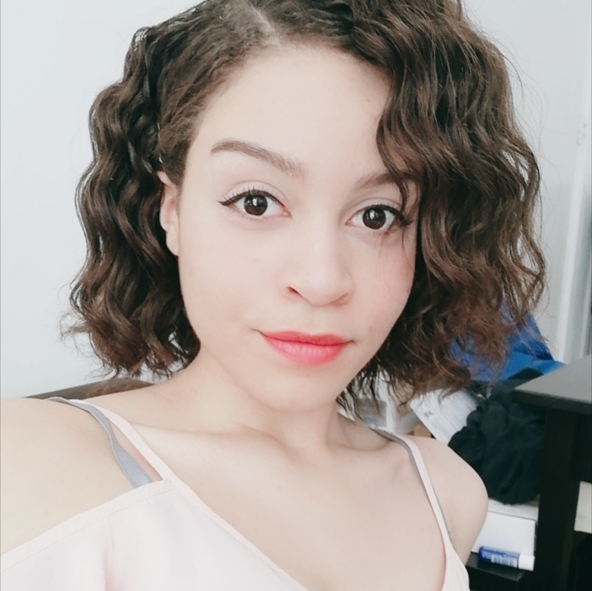

About me
BELANGRIJK: Dit is een verouderd portfolio. Nieuwe volgt binnenkort op deze link.
Over mij
Mijn naam is Miriam Lehmacher, ik ben geboren op 5 november 1999. Over het algemeen kan ik mezelf beschrijven als een gemotiveerd en leergierig persoon. Ik leer namelijk graag in mijn vrije tijd en sta er elke dag voor open om mezelf te verbeteren. Ik leer voornamelijk nieuwe talen, schrijven, mediteren en gezond leven.
Mijn doelen
Wat ik op dit moment het liefst zo snel mogelijk wil is een MBO-diploma en een HBO-diploma/certificaat. Daarvoor heb ik motivatie en doorzettingsvermogen voor nodig.
Ik zit nog twee jaren op het Grafisch Lyceum Rotterdam bij de opleiding applicatie- en mediaontwikkeling inclusief stage, waar ik erg naar uit kijk.
Het tweede doel dat ik wil bereiken is een professionele uitstraling, hiervoor moet ik meer met volwassenen en professionele mensen in contact komen en een netwerk opbouwen
Waar ik ook nog aandacht aan moet besteden is mijn kennis op vakgebied, ik moet hard werken en open staan om meer te leren dan ik al doe op school.
Waar ik later wil werken
Later zou ik graag in een groot bedrijf willen werken met mensen van mijn eigen leeftijd of ouder.
Ik hou van een formele sfeer omdat dit meer past bij hoe ik mezelf later zie. Ik wil op een nette plek werken in een schoon kantoor en ik wil samenwerken met hard werkende, gemotiveerde collega's.
Terugkijken naar vorig jaar
Vorig jaar heb ik makkelijk gehaald, ik heb mijn best gedaan maar heb zeker meer in me dan nodig was. Dit jaar is dat heel anders, het werk is complexer, meer en de beoordelingen zijn strenger. Ik zal mij hierop aanpassen en meer geven dan vorig jaar. Hard werken vind ik leuk dus ik denk dat het wel goed komt. Vorig jaar plande ik mijn werk en deadlines goed dus zal ik dat dit jaar weer doen.
Mezelf verder ontwikkelen
Mijn ontwikkeling is nog niet compleet, er zijn nog wat dingen die ik aan mezelf moet veranderen. Zowel op vakgebied als op professioneel gedrag.
Ik zal mezelf moeten klaarmaken voor de bedrijfswereld. Hier heb ik tijd, kennis, toegang tot informatie, professionele ondersteuning en veel motivatie voor nodig.
Mijn ideale baan
Zoals ik al zei wil ik in een groot bedrijf werken, veel mensen en een formele sfeer. Dit komt omdat dit past bij hoe ik mezelf later zie. Ik vind professioneel zijn belangrijk en wil vooral samenwerken met hard werkende mensen zodat we samen een successvol resultaat kunnen neerzetten waar we ons allemaal evenveel voor hebben gegeven. Het is vanzelfsprekend dat ik goed wil verdienen en een balans wil tussen werk en prive. In mijn omgeving zie ik veel mensen die deze balans niet hebben waargemaakt. Hierdoor zie ik het belang hiervan echt in en zal ik dit voor mezelf goed regelen.
Doorstromen naar het HBO
Zoals ik al eerder heb verteld wil ik, na de opleiding die ik nu doe, doorstromen naar een HBO opleiding. Dit wordt geen 4-jarige studie, omdat ik al oud ben en snel wil gaan werken. Waarschijnlijk ga ik een associate degree van 2 jaar doen of een HBO-programma van 1 jaar. Ik ben er bijna zeker van dat ik HBO wil doen omdat ik nog meer wil leren en ook kunnen worden aangenomen op HBO vacatures en functies.
Een opleiding die ik graag zou willen doen is Technisch Informatica. Dit past bij mij omdat ik programmeren heel leuk vind. De toelatingseisen zijn een HAVO of MBO niveau 4 diploma in deze richting.
Naast deze studie heb ik een tweede keuze, front-end developing. Ik vind templates maken ook leuk dus een HBO studie voor front-end zou ik ook nog wel eens kunnen kiezen.
Voor sommige HBO studies zijn er geen toelatingseisen naast een intake test.
Als het niet over IT gaat zijn er nog wel een paar dingen waar ik wel geïnteresseerd in zou zijn. Bijvoorbeeld vertaler of tolk worden lijkt me erg leuk. Dit kost veel tijd om te leren en vraagt heel veel ervaring. Toch zie ik mezelf dit wel zijn, ookal is dit een minder realistisch doel.

